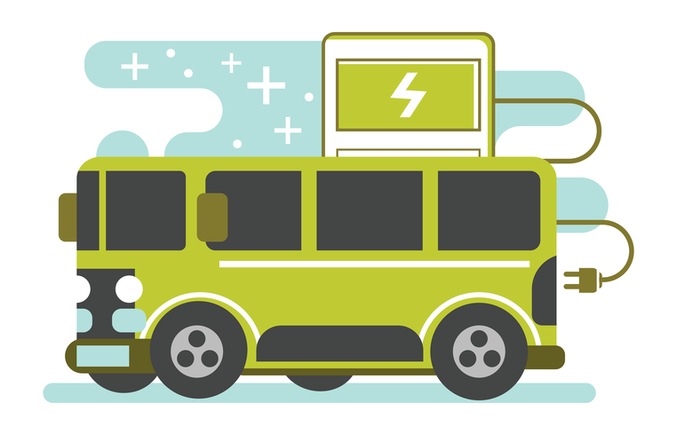

Energy Busery, la app para gestion de buses electricos
La gestion mas productiva y factible
para tu ciudad

Energy Busery es una aplicación sobre la gestión y uso de los buses eléctricos, fundamentos de por
qué no son utilizados en masa, técnicas para implementarlos en ciudades a diferencia de proyectos
para la administración u observación del transporte público, nuestro proyecto buscara las maneras
posibles para implementar buses eléctricos y en un apartado servirá como complemento para gestionar
dichos buses.